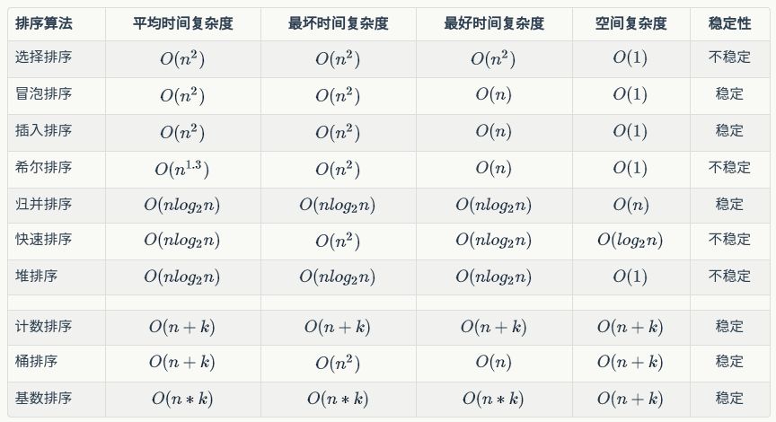

十种常见排序算法-JAVA版
概述
数据结构与算法的可视化可以参考Data Structure Visualizations
分类
十种常见的排序算法主要可分为两大类：比较类排序和非比较类排序
- 比较类：通过对数组中的元素进行比较来实现排序，这类算法的时间复杂度下界为$\Omega(nlogn)$；
- 非比较类：利用非比较的方法获得有关输入数组中的排序信息，则可突破$\Omega(nlogn)$的复杂度下界，达到线性复杂度。
复杂度

本来是用的markdown表格，但是这个主题不支持表格中显示公式，所以只好用图片了。有点模糊，请见谅。
以下排序以数组{4, 23, 7, 34, 129, 18, 0, 116, 11, 32, 25}为示例。
比较排序
1. 选择排序
1.1 算法描述
选择排序是一种最简单的排序算法，其命名原因就是不断地选择数组中的最小（大）值。首先，找到数组中最小的元素，然后将它和数组的第一个元素交换位置（如果第一个元素最小就和自己交换）。其次，在剩下的元素中找到最小的元素，将其与数组的第二个元素交换位置，如此直到将整个数组都排好序。
1.2 代码实现
1 | //选择排序 |
1.3 排序过程
1 | 第1趟结果为：[0, 23, 7, 34, 129, 18, 4, 116, 11, 32, 25] |
1.4 算法特点
选择排序的总交换次数为N。它有两个鲜明的特点：
- 运行时间和输入无头
- 数据移动是最少
2. 冒泡排序
2.1 算法描述
冒泡排序的基本思想就是比较相邻的元素，根据大小交换位置。算法过程如下：
- 比较相邻元素，若前一个比后一个大，则交换两元素；
- 比较每一对相邻元素，一趟排序过后，最后一个元素即为最大元素；
- 重复这样的过程直到排序完成
2.2 代码实现
1 | //冒泡排序 |
2.3 排序过程
1 | 第1趟结果为：[4, 7, 23, 34, 18, 0, 116, 11, 32, 25, 129] |
3. 插入排序
3.1 算法描述
插入排序是一种简单的排序算法。通过类比整理扑克牌可以很好地理解插入排序的过程。插入排序把数组分为两个部分，左端为有序部分，右端为待插入部分。每次选择右端的第一个元素，插入到左端的相应位置，并将左端比该值大的元素依次右移，直到数组全部被排好序。
3.2 代码实现
1 | //插入排序 |
3.3 排序过程
1 | 第1趟结果为：[4, 23, 7, 34, 129, 18, 0, 116, 11, 32, 25] |
3.4 算法特点
其所需时间取决于输入元素的初始顺序，适合小规模的数组。
4. 希尔排序
4.1 算法描述
希尔排序是一种基于插入排序的快速的排序算法。插入排序对于大规模乱序数组速度很慢，这主要是因为其在插入的过程中，只交换相邻两个元素。而希尔排序则交换不相邻的元素以对数组的局部进行排序，最终用插入排序将局部有序的数组排序。希尔排序是第一个突破$O(n^2)$的排序算法。
希尔排序的思想是使数组中任意间隔为h的元素都是有序的，这样的数组称为h有序数组。在橙书《算法》中，希尔排序的h有序数组使用序列$1/2(3^k-1)$，从$N/3$开始递减至1。如下的实现由于数组只有10个所以用1, 4, 13, 40, 121, 364, 1093, ...这样的递增序列无法较为清楚地展示希尔排序的过程，因而选择使用$N/2$的方法。
4.2 代码实现
1 | //希尔排序 |
4.3 排序过程
1 | 第1趟增量为5，结果为：[4, 0, 7, 11, 32, 18, 23, 116, 34, 129, 25] |
4.4 算法特点
希尔排序的代码量很小，且不需要额外的内存空间，对于中等大小的数组其运行时间可接受。后续介绍的归并、快排和堆排序更加高效，但除了对于很大的$N$，这些高级的排序算法可能只比希尔排序快两倍，而且更复杂。所以当需要解决一个排序问题而没有api（如嵌入式系统中）时，就可用希尔排序。
5. 归并排序
5.1 算法描述
归并排序是一种建立在归并操作上的典型的基于分治法的排序算法。算法递归地将数组分成两半，分别排序，然后将结果归并起来。
- 原地归并
首先将复制所有元素复制到辅助数组中，然后再归并回原始数组。
方法在归并时进行了4个条件判断：左半边用尽（取右半边的元素）、右半边用尽（取左半边的元素）、右半边的当前元素小于左半边的当前元素（取右半边的元素）、右半边的当前元素大于等于左半边的当前元素（取左半边的元素）。
——引自橙书
1 | //原地归并 |
5.2 代码实现
1 | //归并排序，参考橙书p170 |
5.3 排序过程
由于递归调用无法直接明白地输出排序过程，可视化可以参考Data Structure Visualizations中比较排序之归并。
5.4 算法特点
归并排序能够保证将任意长度为$N$的数组排序所需时间与$NlogN$成正比，主要缺点是需要额外空间与$N$成正比。
6. 快速排序
6.1 算法描述
与归并一样，快排也是分治法的一种应用。其排序的分治过程分三个步骤：
- 分解：在数组中选择一个元素作为基准（pivot），将数组分为两个子数组，一个比基准小，另一个比基准大；
- 解决：通过递归调用快速排序，对两个子数组排序；
- 合并：由于两个数组是就地排序的，所以合并不需要操作，整个数组已经排序。
6.2 代码实现
1 | //快速排序，参考算法导论p85,86 |
6.3 排序过程
1 | pivot为25，分割结果为：[4, 7, 17, 0, 11, 25, 34, 116, 129, 31, 27] |
6.4 算法特点
以上数组划分的基准选择的是数组或子数组的最后一个元素，这种方法虽然简单明确，但是并不是一种好的划分方法。因为这种划分方式在输入数组是预排序的或反序的时候，将使快速排序的时间复杂度退化到$O(N^2)$。下面介绍两种较好的pivot选择方法：
- 随机选取：
随机选取pivot是比较安全方法，快排的平均复杂度计算一般用随机选取的划分方法。 - 三数中值分割（Median-of-Three Partitioning）：
这方法一般选择数组左端、右端及中心位置三个元素的中值作为pivot。如示例数组{4, 27, 7, 34, 29, 17, 0, 6, 10, 31, 25}中，左端元素为4，右端元素为25，中心元素为17，三数的中值为17，于是pivot选择17。 使用三数中值法消除了预排序输入的情况，减少了快排的运行时间。如下是一种三数中值分割的实现。
1 | //三数中值分割 |
7. 堆排序
7.1 算法描述
堆排序是是一种基于堆这种数据结构的排序方法。堆可以被视为一棵完全二叉树，除最后一层外，堆的每一层都是被填满的。堆具有子节点小于或大于父节点的特点，即堆的最小或最大节点为根节点。堆分为小顶堆和大顶堆。在堆排序中，升序使用大顶堆，降序使用小顶堆。
堆排序算法的过程如下：
- 建堆：将数组构建为大顶堆；
- 交换元素：最大元素在堆顶，即
arr[0]，将arr[0]与arr[n-1]交换，得到新的数组{arr[0]...arr[n-2]<=arr[n-1]； - 保持堆性质：交换元素后，堆的状态可能不符合堆的性质，需要调用
maxHeapify调整为新的堆 - 重复此过程：使堆的大小从n-1降到2
7.2 代码实现
1 | //堆排序，算法导论p74 |
7.3 排序过程
1 | 当前堆的状态为： |
7.4 算法特点
堆排序是一种原地排序算法，所以其空间复杂度为$O(1)$。
非比较排序
8. 计数排序
8.1 算法描述
计数排序需要满元素中的每一个都是介于0到k之间的整数。其基本思想为对每一个元素确定小于该元素的元素个数，这样就可以直接把该元素放到最终输出数组中的位置上。如，有5个元素小于元素i，则i的最终位置为5。
8.2 代码实现
1 | //计数排序 |
8.3 排序过程
1 | 中间数组为[1, 0, 0, 0, 1, 0, 0, 1, 0, 0, 0, 1, 0, 0, 0, 0, 0, 0, 1, 0, 0, 0, 0, 1, 0, 1, 0, 0, 0, 0, 0, 0, 1, 0, 1, 0, 0, 0, 0, 0, 0, 0, 0, 0, 0, 0, 0, 0, 0, 0, 0, 0, 0, 0, 0, 0, 0, 0, 0, 0, 0, 0, 0, 0, 0, 0, 0, 0, 0, 0, 0, 0, 0, 0, 0, 0, 0, 0, 0, 0, 0, 0, 0, 0, 0, 0, 0, 0, 0, 0, 0, 0, 0, 0, 0, 0, 0, 0, 0, 0, 0, 0, 0, 0, 0, 0, 0, 0, 0, 0, 0, 0, 0, 0, 0, 0, 1, 0, 0, 0, 0, 0, 0, 0, 0, 0, 0, 0, 0, 1] |
9. 桶排序
9.1 算法描述
当数组符合均匀分布时，应用桶排序可使排序过程以线性期望时间运行。桶排序的基本思想是：
- 建立n个桶，n可为数组大小，桶的跨度为$dis=(maxVal-minVal)/(n-1)$，其中最后一个桶为最大值本身；
- 遍历数组，把元素放入各个桶中；
- 对桶内元素排序
- 遍历各桶，输出元素
9.2 代码实现
1 | //桶排序，参考程序员小灰 |
9.3 排序过程
1 | 各个桶内元素为[[4.0], [], [], [], [], [], [], [], [], [], []] |
10.基数排序
10.1 算法描述
基数排序是一种用在老式穿卡机上的算法。这种算法先按照最低有效位数字进行排序，再对高一位的有效位数字进行排序，直到最高位。
- 取得数组中的最大值，算出其数位；
- 从对低位开始，根据每一数位进行排序；
10.2 代码实现
1 | //基数排序 |
10.3 排序过程
1 | 当前数位为1 |
- 一些公用函数
1 | //helper |
总结
排序算法是算法学习中最基本的问题，而且也是程序员面试中的高频问题。我自己目前在秋招过程中已经被到问到过3次快排了。这篇blog也算是总结一下自己之前的面试。
写的时候不知道，写完才发现可以用泛型。不过主要是为了学习算法，影响不大。之后的二叉搜索树和avl树都用了泛型。全部代码已上传到github上我的项目Dr-Cube/DataStructuresAlgorithm。